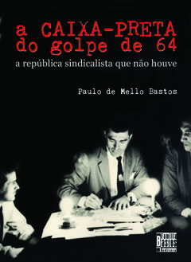
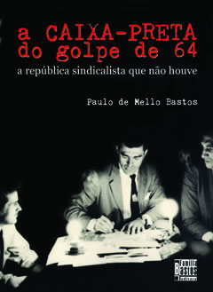

"a caixa preta DO GOLPE de 64" / Livro e documentÁRIO

"a caixa preta DO GOLPE de 64" / Livro e documentÁRIO |
||||
|
||||
 |
|
|||
SOLANGE BASTOS, MELLO BASTOS e “A CAIXA-PRETA” na telinha! Mello Bastos e sua filha, a editora Solange Bastos, foram entrevistados no Espaço Aberto Literatura dos dias 13 e 14 DE OUTUBRO, 01h30 (madrugada de 5a p/ 6a) e 15h30 (6a), na GLOBONEWS. O programa é o espaço mais nobre da TV a cabo sobre livros. O apresentador, Edney Silvestre, ficou encantado com o autor, que aos 88 anos conta com humor e muita emoção algumas das histórias que fazem de “A Caixa-Preta” uma referência, a partir de agora obrigatória, para quem quiser estudar o período anterior ao golpe militar. A Solange, Edney perguntou sobre o processo de pesquisa e montagem do livro. "Foi uma delícia" – respondeu ela, referindo-se à oportunidade de reler a própria história familiar, ajudada pela memória de criança e da adolescente que acompanhou o pai no exílio. Nos bastidores, Edney Silvestre confessou que sonhava em ser aviador quando criança, exatamente como Mello Bastos, que realizou o sonho. Um belo encontro. Uma grande entrevista. Estão no EPK do projeto para a imprensa, trechos do documentário “A busca da Caixa-Preta” e entrevista com o autor (já decupada), também disponível em mídia com qualidade para exibição broadcast. No site da Editora (www.familiabastos.net) o livro (com distribuição independente para as livrarias, peça já o seu!) está liberado para download (copyleft).
A noite do primeiro lançamento de “A Caixa-Preta”, no Rio de Janeiro, foi um reencontro de grande emoção. Nos próximos eventos, outros militantes daqueles dias, como o atual Ministro da Defesa, Waldir Pires, poderão estar presentes. A festa aconteceu no Espaço Cultural Palácio Guanabara, no dia 13 de Setembro de 2006, bem ao lado de onde o governador Carlos Lacerda, por ocasião do golpe de 64, mandou levantar barricadas com medo dos fuzileiros navais comandados pelo almirante Aragão. O local histórico, 42 anos depois, virou palco de um grande encontro político-cultural e de amigos de várias gerações: da jovem Juliana Brizola, neta de Leonel Brizola, a companheiros de sindicalismo que não se viam juntos há mais de 4 décadas, uma espécie de “Buena Vista Social Club” do sindicalismo brasileiro. Ao lado de Paulo de Mello Bastos estavam Hércules Corrêa, temido líder tecelão comunista daqueles tempos, que abandonou a cadeira de rodas, enfrentou a escadaria do palácio de muletas e chegou caminhando ao evento; Clodesmidt Riani, ex-presidente da CNTI e do Comando Geral dos Trabalhadores, que veio especialmente de Juiz de Fora para o encontro; e Rafael Martinelli, a grande surpresa da noite, trazido de São Paulo, onde vive, pela sobrinha de outro grande líder ferroviário (Batistinha), já falecido, a advogada Moema Baptista. Martinelli confirmou ser ele mesmo o companheiro que aparece à esquerda de Mello Bastos na foto da capa do livro.
No lançamento, parentes, amigos, velhos sindicalistas, anistiados e parlamentares puderam assistir “A busca da Caixa-Preta”, feito por Solange Bastos, uma espécie de trailer audiovisual do livro, com 16 minutos. O vídeo mostra trechos das conversas de Mello Bastos com os companheiros de luta, exatamente as mesmas conversas que deram origem ao livro, e traz imagens históricas, como as cenas do comício da Central e “o mar de gente” de que o autor Mello Bastos tanto fala. A música de encerramento é de Ricardo Vilas, "Feijão com Arroz", acompanhado na interpretação por Chico Buarque de Holanda.
O livro foi escrito por um dos poucos sobreviventes da época, ainda lúcidos. Paulo de Mello Bastos, hoje com 88 anos, resolveu abrir a caixa-preta do golpe de 64, ou seja, de toda a luta sindical e política pelas reformas de base, que assustou os militares golpistas. Para isso, o velho líder do Comando Geral dos Trabalhadores e ex-comandante da Varig procurou sete companheiros daqueles dias, como o então consultor-geral da República Waldir Pires, o ministro do Trabalho Almino Affonso, o líder da Frente Parlamentar Nacionalista Neiva Moreira, o sindicalista comunista Hércules Corrêa, e o presidente da poderosa CNTI e do CGT, Clodesmidt Riani. Ainda foram ouvidos dois brigadeiros, a favor e contra o golpe, Marcio Coqueiro e Rui Moreira Lima. Das conversas gravadas saiu muita história inédita. O mestre Marcos de Castro, velho copydesk do JB, afirma que o livro pode ser lido “como um romance dos bons, daqueles em que você tem pressa de virar a página porque o fio da meada é tenso, não afrouxa nunca”. Geneton Moraes Neto, editor do Fantástico, acrescenta que “são memórias que podem ser lidas como reportagens. Melhor para o leitor”. O comentarista Carlos Chagas, autor do prefácio, vai além: “a Caixa-Preta não é apenas mais um relato, é a própria História”.
|